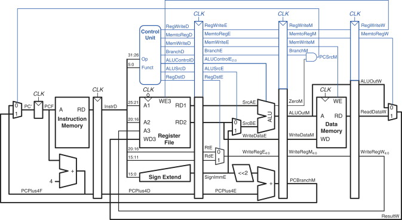

Language: Verilog
A pipelined CPU implementation written in Verilog. Includes a full arithmetic logic unit, control unit, register file, and memory. Designed to execute a subset of RISC-V instructions across multiple pipeline stages.
